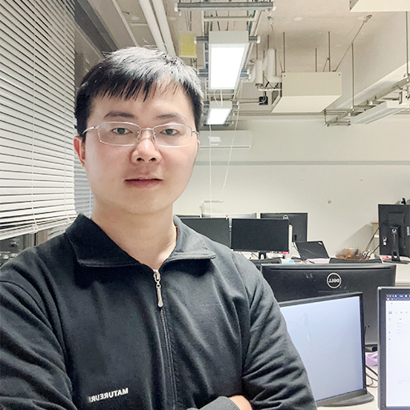
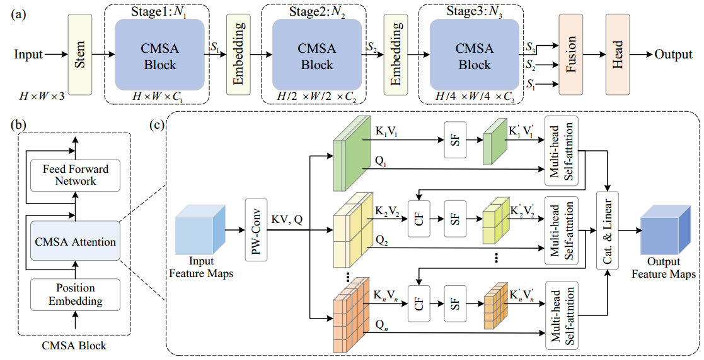
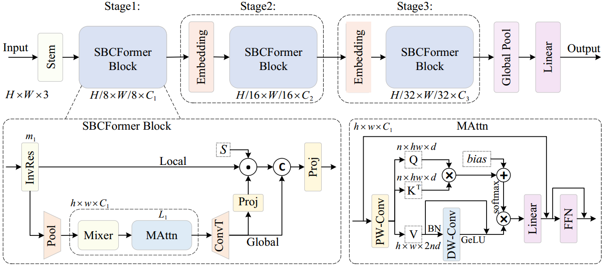
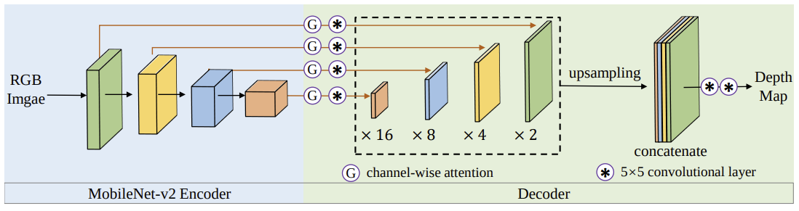
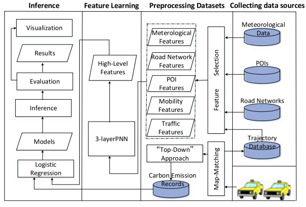

|
I am a Ph.D. candidate in the Graduate School of Information Sciences at Tohoku University, supervised by Prof. Takayuki Okatani. Previously, I received my master's degree from School of Computer Sicience and Technology at Huazhong University of Sicience and Technology University, supervised by Prof. Chen Yu and Prof. Hai Jin. My current research focuses on neural network architectural innovations and optimizations for computer vision applications on resource-limited devices. My long-term research goal is to advance visual intelligence and AI systems for real-world applications on mobile devices, enabling high-performance, resource-efficient, and scalable on-device AI. I am on the job market this year (2025). |
 |

{kind=link}
|
|
- [2024.12] One paper 'CMSA' was submitted to CVIU.
- [2023.10] One paper 'SBCFormer' was accepted to WACV'24.
- [2023.08] One paper was accepted to KSEM'23.
|
|
- [2024.10-2025.03] Part-time research staff, RIKEN Center for Advanced Intelligence Project.
- [2020.04-2024.10] Research assistant, Graduate School of Information Sciences, Tohoku University.
- [2020.03-2022.03] Main member, "Establishing Neural Architectural Design Methodology Accelerating Paradigm Shift Brought By Deep Learning", Ministry of Education, Science, Sports and Culture.
- [2019.10-2020.03] Member, "Obstacle Detection for Vehicle", DENSO CORPORATION.
- [2018.12-2019.03] Research assistant, Department of Computer Science, City University of Hong Kong.
- [2016.04-2017.03] Exchange student, Department of Sciences and Informatics, Muroran Institute of Technology.
- [2015.02-2017.06] Main memebr, "Intelligent Traffic Decision Support System", Zhuhai City.
|
|
|

|
Xiangyong Lu, Masanori Suganuma, Takayuki Okatani arXiv, 2024 arXiv / code |
|

|
Xiangyong Lu, Masanori Suganuma, Takayuki Okatani WACV, 2024 arXiv / code |
|

|
Junjie Hu, Chenyou Fan, Hualie Jiang, Xiyue Guo, Yuan Gao, Xiangyong Lu, Tin Lun Lam The 16th International Conference on Knowledge Science, Engineering and Management, 2023 arXiv / code |

|
Xiangyong Lu, Kaoru Ota, Mianxiong Dong, Chen Yu, Hai Jin IEEE Transactions on Intelligent Transportation Systems (Review Results: Accept After Minor Revision), 2020 arXiv |
|

|
Xiangyong Lu, Kaoru Ota, Mianxiong Dong, Chen Yu, Hai Jin IEEE Transactions on Sustainable Computing , 2017 arXiv |
|
|
- [2021-22] Advance Graduate School Pioneering Research Support Project for Doctoral Students, Japan Science and Technology Agency.
- [2019-22] Global Hagi Scholarship for Doctoral Students, Tohoku University.
- [2017] Outstanding Graduates (GPA 4.0/4.0), Huazhong University of Science and Technology.
- [2016] Zhi Xing Excellent Student Scholarship, Huazhong University of Science and Technology.
- [2016] Merit Graduate Student, Huazhong University of Science and Technology.
|
|
- Reviewer: IJCV24, CVPR24/25, ECCV24, WACV25, ACCV24, IEICE25
- In previous years, I also reviewed papers on big data mining and intelligent systems for IEEE Transactions on Vehicular Technology, Vehicular Technology Conference, and CPSCom.